Los géneros musicales latinos más importantes en el mundo
La música latinoamericana no solo es una manifestación artística, sino también un reflejo de los procesos históricos, sociales y culturales que han definido a la región. A través de sus ritmos, letras e interpretaciones, se narran multiples historias de migración, resistencia, identidad y transformación. En un contexto globalizado, estos géneros han adquirido una relevancia importante, posicionándose como ritmos clave dentro de la industria musical mundial. La diversidad de los géneros musicales latinos conforma un fenómeno sofisticado que trasciende en lo sonoro para insertarse en diversos t económicas, tecnológicas y socioculturales. En este sentido, el entenderlos no solo implica analizar las características de su estilo de cada género, sino también comprender los factores que han determinado su expansión y permanencia en distintos contextos históricos. A partir de este enfoque, esta página organiza los géneros musicales latinos en función de cuatro puntos: su desempeño en términos de ventas y legado histórico, su impacto en plataformas de streaming, su papel en la construcción de cultura e identidad, y su capacidad de adaptación en un entorno globalizado. Cada uno de estos apartados permitirá examinar, desde una perspectiva diferente, cómo estos géneros han evolucionado y cómo continúan influyendo en audiencias a nivel local y global.
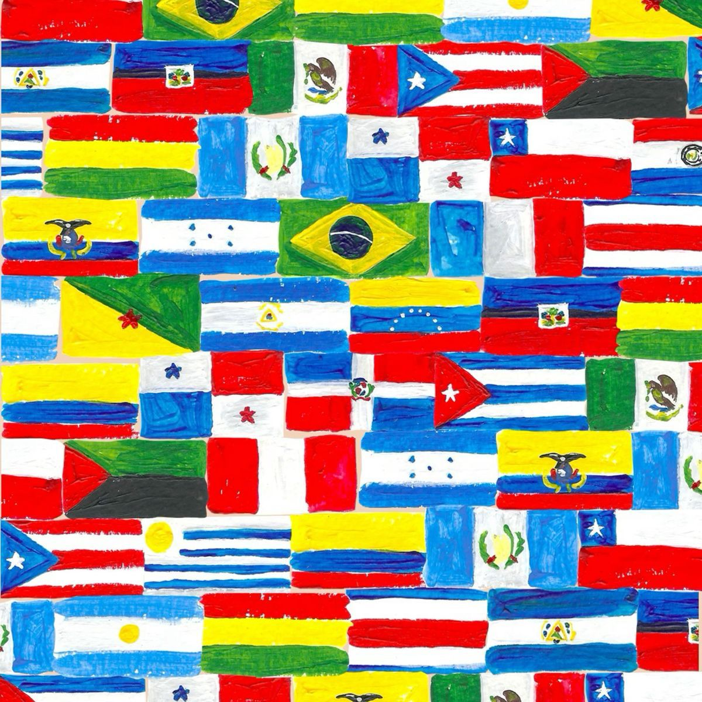
1. Ventas y legado
Pop Latino
El pop latino no es un solo ritmo, sino una fusión híbrida que combina la estructura de la música pop internacional con ritmos tradicionales de América Latina. A lo largo de las décadas, ha servido como el puente principal entre la cultura hispana y el mercado global.
En cuanto a su estilo, se caracteriza por una adaptabilidad constante. Sus raíces están en la balada romántica y el bolero, pero ha evolucionado integrando sintetizadores, guitarras españolas y percusiones latinas como congas y bongós. Actualmente, es común ver una fuerte fusión con el género urbano (reggaetón y trap).
El impacto en ventas del género es masivo. Figuras como Julio Iglesias lideran la historia con más de 250 millones de discos vendidos, seguido por Shakira y Luis Miguel, quienes superan los 100 millones de copias. Estos números demuestran que el pop en español es una de las industrias más rentables del mundo.
El legado más importante es el concepto del "Crossover". Gracias a artistas como Gloria Estefan en los 80 y la explosión de Ricky Martin a finales de los 90, la música en español dejó de ser considerada "nicho" para competir directamente en los charts de Billboard con artistas de talla mundial.
Finalmente, los referentes y premios consolidan su importancia. Artistas como Alejandro Sanz y Juanes acumulan más de 20 Latin Grammys cada uno, mientras que Shakira ha logrado unificar el éxito comercial con el reconocimiento de la crítica, siendo la mujer latina más premiada de la historia.
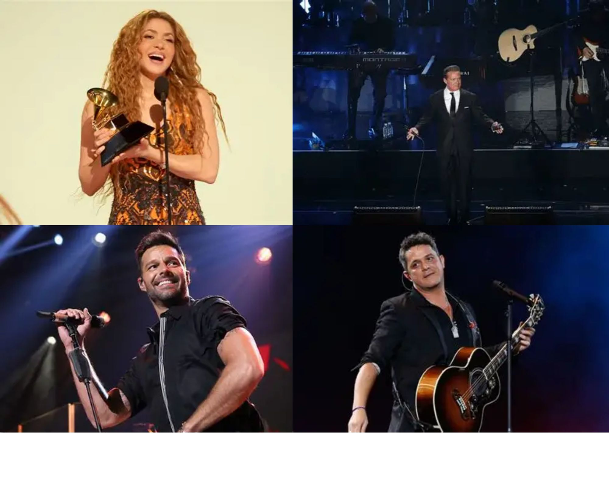
Regional Mexicano
El regional mexicano se define como un término paraguas que agrupa diversos subgéneros rurales y urbanos desarrollados en México y el suroeste de los Estados Unidos. Su estructura técnica se fundamenta en el uso de instrumentos de viento (banda sinaloense), cuerdas (mariachi y conjunto norteño) y, más recientemente, la incorporación de armonías complejas en la guitarra y el contrabajo dentro de los "corridos tumbados". A diferencia de otros géneros, su identidad radica en la narrativa lírica, que oscila entre el romance, la crónica social y la exaltación de las raíces culturales.
En términos de impacto comercial y ventas, el género ha experimentado un crecimiento exponencial en la era del streaming. Históricamente, figuras como Vicente Fernández consolidaron ventas superiores a los 50 millones de álbumes físicos. Sin embargo, el fenómeno contemporáneo ha desplazado las métricas hacia el consumo digital, donde artistas como Peso Pluma y grupos como Fuerza Regida han logrado posicionar múltiples temas simultáneamente en el Top 50 Global de Spotify, superando en alcance a géneros tradicionalmente dominantes como el pop anglosajón.
El legado del regional mexicano reside en su capacidad de resiliencia y modernización. Ha pasado de ser una música asociada estrictamente a sectores rurales y festividades tradicionales, a convertirse en un símbolo de orgullo generacional para la diáspora latina. Su influencia ha permeado la moda, el lenguaje y ha forzado una reestructuración en las categorías de premiaciones internacionales, estableciendo una infraestructura industrial propia que no depende de las tendencias de producción de Miami o Los Ángeles.
Dentro de los referentes y reconocimientos, destaca la figura de Joan Sebastian, quien ostenta el récord de ser uno de los mexicanos con más premios Grammy y Latin Grammy en la historia. Asimismo, agrupaciones como Los Tigres del Norte han sido fundamentales para la institucionalización del género, recibiendo múltiples galardones por su labor en la crónica del migrante. En la actualidad, el reconocimiento de la Academia de la Grabación y el éxito en los premios Billboard confirman que el regional mexicano ha dejado de ser "regional" en alcance para ser una potencia global.
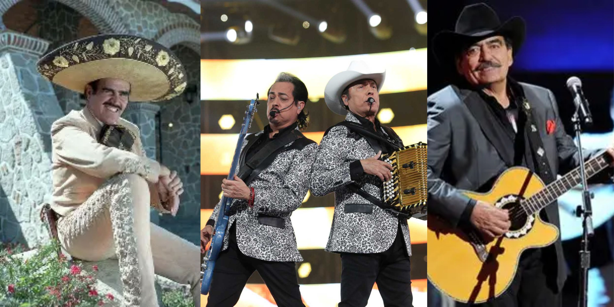
Salsa
La salsa no se clasifica estrictamente como un ritmo único, sino como una síntesis de géneros afrocaribeños —predominantemente el son montuno, el mambo, la rumba y la guaracha— que cristalizó en la década de 1970 en Nueva York. Desde una perspectiva técnica, su base reside en la clave, un patrón rítmico que organiza la instrumentación compuesta por vientos, percusiones complejas (congas, timbales) y el piano. Su naturaleza es intrínsecamente urbana, sirviendo originalmente como un medio de expresión para las comunidades latinas en el extranjero.
El impacto en ventas y presencia comercial de la salsa se institucionalizó a través del sello Fania Records, que transformó el género en un producto de exportación global. Álbumes emblemáticos como "Siembra" (1978) de Willie Colón y Rubén Blades se convirtieron en hitos históricos, siendo durante décadas el disco más vendido del género. A diferencia del pop, la salsa ha mantenido un catálogo de ventas sostenido a lo largo de los años (catalog sales), con figuras como Marc Anthony logrando certificaciones de platino masivas y dominando las listas de Billboard Tropical durante décadas.
El legado de la salsa es profundo y multidimensional. En lo social, introdujo la "salsa conciencia", donde las letras abandonaron el escapismo para abordar temas de política, desigualdad y orgullo racial. Musicalmente, estableció los estándares de la orquestación latina moderna y permitió que la identidad panhispánica se consolidara en ciudades como Cali, San Juan, Caracas y Nueva York. Es un género que ha sobrevivido a las modas gracias a su virtuosismo instrumental y su arraigo en la cultura del baile social.
Respecto a sus referentes y distinciones, es imperativo mencionar a Celia Cruz, la "Reina de la Salsa", cuya carrera de más de cinco décadas le otorgó múltiples Grammys y la Medalla Nacional de las Artes en EE. UU. Otros pilares como Rubén Blades han sido galardonados con más de 20 premios Grammy y Latin Grammy, destacando no solo por su éxito comercial sino por la excelencia intelectual de sus composiciones. La salsa ha sido reconocida por la UNESCO y diversas instituciones académicas como una de las contribuciones más importantes de América Latina a la cultura universal.
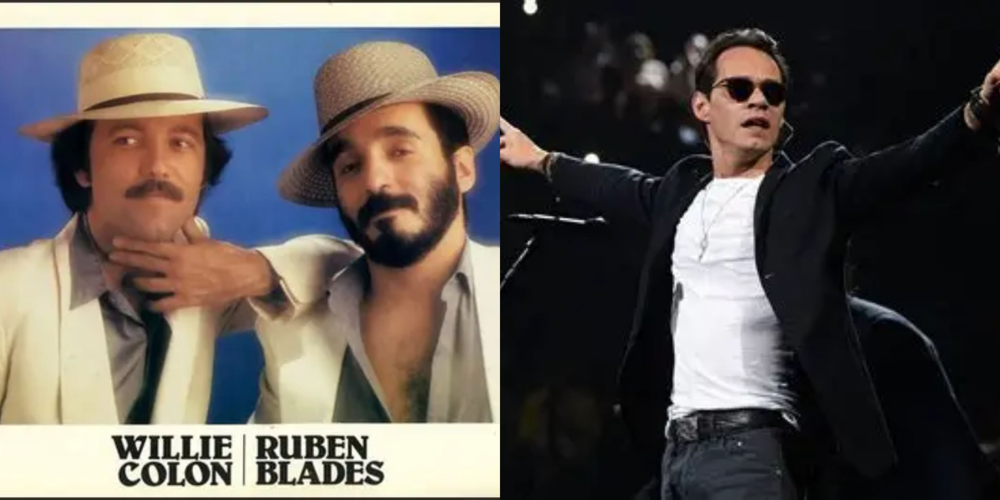
Rock en Español
El rock en español se define como un movimiento estético y cultural que alcanzó su madurez en la década de 1980, particularmente a través de la campaña "Rock en tu idioma". Su propuesta técnica es heterogénea: aunque parte de la estructura clásica del rock (guitarra, bajo y batería), se distingue por la incorporación de líricas con una carga poética profunda y la experimentación con ritmos autóctonos, desde el tango y el folclore andino hasta el ska y el reggae. Este género fue fundamental para la modernización de la industria musical latina, permitiendo la transición de la balada tradicional a sonidos más alternativos.
En el ámbito de ventas e impacto comercial, el género demostró que el rock cantado en castellano podía ser masivo y rentable. La banda argentina Soda Stereo fue el referente definitivo, rompiendo récords de asistencia en toda América Latina con su gira "Me Verás Volver" en 2007, que vendió más de un millón de boletos. Otros exponentes como Maná han logrado cifras de ventas superiores a los 40 millones de álbumes, consolidándose como uno de los grupos de rock más exitosos a nivel mundial, independientemente del idioma.
El legado del rock en español reside en su capacidad para articular el sentimiento de la juventud hispanoamericana frente a los cambios sociales y políticos de finales del siglo XX. Bandas como Caifanes en México o Los Prisioneros en Chile utilizaron la música como un vehículo de crítica social y existencialismo, logrando que el español se estableciera como un lenguaje legítimo y poderoso para la expresión del rock. Su influencia es visible hoy en día en la escena del pop alternativo y la música indie, que heredaron su libertad creativa.
Entre sus referentes y galardones, destacan figuras icónicas como Gustavo Cerati, cuya obra tanto en Soda Stereo como en solitario ha sido objeto de estudios académicos y múltiples premios Grammy Latino. Asimismo, la banda Café Tacvba ha sido reconocida internacionalmente por su capacidad de innovación, recibiendo elogios de la crítica especializada y premios Grammy por álbumes que fusionan el rock con la identidad mexicana. Estos artistas no solo acumulan premios, sino que han sido incluidos en las listas de los mejores álbumes de la historia por publicaciones como Rolling Stone, reafirmando la relevancia global del movimiento.
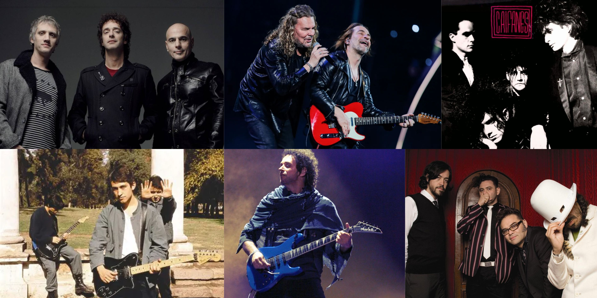
2. Streaming y Consumo Digital
Reggaetón
El reggaetón es un género musical urbano que surgió en Puerto Rico y Panamá durante la década de 1990, resultado de la fusión de influencias caribeñas y urbanas. Su elemento característico es el ritmo conocido como “dembow”, una base rítmica repetitiva y altamente bailable que se apoya en la producción digital y el uso de herramientas electrónicas. A nivel temático, sus letras suelen explorar la vida urbana, el entretenimiento, las relaciones interpersonales y la cultura del baile. Con el paso del tiempo, el reggaetón ha evolucionado al integrarse con otros géneros como el pop latino, el trap y la música electrónica, lo que ha favorecido su adaptabilidad y permanencia en la industria musical contemporánea.
En el contexto del consumo digital, el reggaetón se ha consolidado como uno de los géneros más influyentes en plataformas de streaming. Su crecimiento ha sido particularmente notable desde mediados de la década de 2010, coincidiendo con la expansión de servicios como Spotify y YouTube. Un caso emblemático es la canción “Despacito” de Luis Fonsi y Daddy Yankee, que superó los 8 mil millones de reproducciones en YouTube, convirtiéndose en uno de los videos más vistos en la historia de la plataforma. Asimismo, artistas como Bad Bunny han alcanzado cifras sobresalientes, acumulando más de 80 millones de oyentes mensuales en Spotify y posicionando varios de sus álbumes entre los más reproducidos a nivel global. Por ejemplo, su álbum Un Verano Sin Ti ha superado los 10 mil millones de reproducciones en dicha plataforma.
Entre los principales referentes del reggaetón destacan figuras pioneras como Daddy Yankee, Don Omar y el dúo Wisin & Yandel, quienes contribuyeron significativamente a la consolidación del género en sus primeras etapas. Posteriormente, una nueva generación de artistas, entre ellos Bad Bunny, J Balvin, Karol G y Rauw Alejandro, ha impulsado la internacionalización del reggaetón, logrando una presencia constante en las listas globales y colaboraciones con artistas de diversos géneros y regiones. Este relevo generacional ha sido fundamental para mantener la vigencia del género en un entorno musical altamente competitivo.
El impacto del reggaetón también se refleja en el ámbito de los reconocimientos y premios. El género tiene una destacada participación en ceremonias como los Latin Grammy y los Billboard Latin Music Awards, donde frecuentemente figura entre las categorías más relevantes. Además, en premiaciones basadas en métricas digitales, como aquellas centradas en reproducciones y popularidad en plataformas, el reggaetón sobresale por su alta demanda y alcance global, lo que evidencia la estrecha relación entre este género y las dinámicas del consumo digital contemporáneo.
Finalmente, el éxito del reggaetón en el entorno digital puede explicarse por diversos factores estructurales y culturales. Entre ellos destacan la simplicidad y eficacia de sus patrones rítmicos, que favorecen la repetición, la duración relativamente breve de sus composiciones, que incrementa el número de reproducciones, y la frecuente colaboración entre artistas, que amplía su alcance a nuevas audiencias. Asimismo, su capacidad para trascender barreras lingüísticas y culturales ha contribuido a su consolidación como uno de los géneros más influyentes en la música global del siglo XXI.
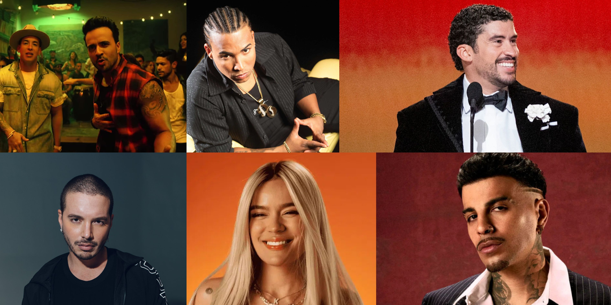
Corridos Tumbados
Los corridos tumbados son un subgénero de la música regional mexicana que surgió a finales de la década de 2010, caracterizado por la fusión de elementos tradicionales del corrido con influencias del trap y el hip hop. Este estilo conserva la narrativa propia del corrido —centrada en historias personales, identidad y contexto social— pero incorpora instrumentación moderna, arreglos minimalistas y una estética más cercana a la cultura urbana contemporánea. Su propuesta musical destaca por el uso de guitarras sierreñas combinadas con ritmos digitales, lo que le otorga un sonido distintivo y atractivo para nuevas generaciones.
En términos de influencias, los corridos tumbados reflejan una convergencia entre la música regional mexicana y géneros urbanos globales, particularmente el trap estadounidense. Esta hibridación ha permitido que el género evolucione rápidamente y se adapte a las dinámicas del consumo digital. Asimismo, su desarrollo está estrechamente vinculado a contextos culturales juveniles, donde se reconfiguran las temáticas tradicionales del corrido para abordar experiencias contemporáneas desde una perspectiva más íntima y estilizada.
En el ámbito del streaming, los corridos tumbados han experimentado un crecimiento significativo en plataformas como Spotify y YouTube. Artistas representativos han acumulado miles de millones de reproducciones, consolidando al género como uno de los más influyentes dentro de la música latina actual. Por ejemplo, canciones como Ella Baila Sola han superado los mil millones de reproducciones en plataformas digitales, mientras que varios álbumes del género han logrado posicionarse en listas globales. Este fenómeno evidencia la capacidad del género para trascender mercados locales y alcanzar audiencias internacionales.
Entre los principales exponentes de los corridos tumbados destacan artistas como Peso Pluma, Natanael Cano y Junior H, quienes han sido fundamentales en la consolidación y popularización del género. Estos intérpretes no solo han redefinido el corrido tradicional, sino que también han establecido una fuerte presencia en la industria musical global mediante colaboraciones, posicionamientos en rankings internacionales y una alta visibilidad en plataformas digitales.
El impacto del género también se refleja en su presencia en listas de popularidad y premiaciones relacionadas con el consumo digital. Su crecimiento acelerado ha llevado a que múltiples canciones ingresen en rankings globales como el Billboard Hot 100 y listas de streaming, lo que demuestra su relevancia en el panorama musical contemporáneo. En conjunto, los corridos tumbados representan una evolución significativa de la música regional mexicana, adaptada a las exigencias y oportunidades de la era digital.
Latin Trap
El Latin Trap es un subgénero de la música urbana que surge a mediados de la década de 2010 como una adaptación del trap estadounidense al contexto latino. Se caracteriza por el uso de ritmos lentos, bases electrónicas con bajos profundos (808) y una estética sonora minimalista. Sus letras suelen abordar temas como la vida urbana, el éxito, las aspiraciones personales y, en muchos casos, narrativas explícitas. A diferencia del reggaetón, el Latin Trap presenta un tono más introspectivo y oscuro.
Este género está fuertemente influenciado por el trap del sur de Estados Unidos, así como por el hip hop, integrando además elementos del reggaetón y otros estilos latinos. Su desarrollo ha sido impulsado por la globalización digital, lo que ha permitido que artistas latinos adopten y transformen este sonido en un producto cultural propio, manteniendo una conexión tanto con sus raíces como con tendencias internacionales.
En términos de streaming, el Latin Trap ha tenido un impacto considerable en plataformas como Spotify y YouTube, especialmente entre audiencias jóvenes. Artistas del género han acumulado miles de millones de reproducciones, y múltiples canciones han ingresado en rankings globales. Por ejemplo, temas y álbumes de figuras destacadas han superado ampliamente los mil millones de streams, consolidando al Latin Trap como un componente esencial del auge de la música latina en la era digital.
Entre los principales exponentes del Latin Trap se encuentran artistas como Bad Bunny, Anuel AA, Myke Towers y Arcángel, quienes han contribuido a la expansión internacional del género. Su influencia se refleja tanto en la popularidad de sus lanzamientos como en su presencia constante en listas de popularidad y colaboraciones con artistas de otros géneros.
Pop Urbano
El pop urbano es un subgénero contemporáneo que combina la estructura melódica del pop con elementos rítmicos del reggaetón, el trap y el R&B. Se caracteriza por producciones pulidas, melodías accesibles y letras centradas en el amor, las relaciones y la vida cotidiana, lo que facilita su alcance masivo. Este estilo busca un equilibrio entre lo comercial y lo urbano, permitiendo su difusión tanto en radio como en plataformas digitales.
En cuanto a sus influencias, el pop urbano integra sonidos del pop internacional con ritmos latinos, especialmente del reggaetón, además de incorporar recursos de la música electrónica. Esta fusión ha favorecido su expansión global, posicionándolo como uno de los géneros más versátiles dentro de la música latina contemporánea.
En el ámbito del streaming, el pop urbano ha alcanzado cifras altamente significativas dentro del mercado digital. Artistas del género acumulan decenas de millones de oyentes mensuales en plataformas como Spotify; por ejemplo, figuras del pop latino como Shakira superan los 70 millones de oyentes mensuales, mientras que otros artistas relevantes del género mantienen audiencias superiores a los 15 o 20 millones :contentReference. Asimismo, múltiples canciones del pop urbano han superado los 100 millones e incluso miles de millones de reproducciones, consolidando su presencia en playlists globales y rankings internacionales.
Entre los principales exponentes del pop urbano destacan artistas como J Balvin, Karol G, Rosalía y Rauw Alejandro, quienes han impulsado la internacionalización del género mediante colaboraciones y una constante innovación sonora. Su impacto se refleja en su presencia en listas globales, premios como los Latin Grammy y el crecimiento sostenido del consumo de música latina, que actualmente representa más de una cuarta parte de las reproducciones globales en plataformas como Spotify.
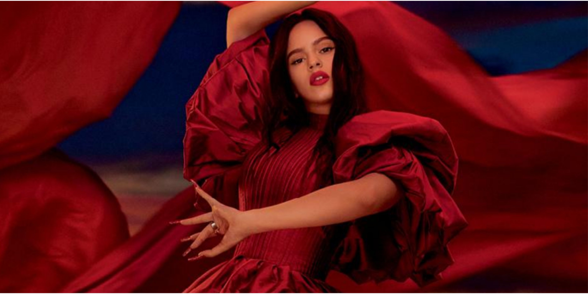
3. Relevancia Cultural
Son Cubano
El son cubano representa el proceso de transculturación más exitoso de las Antillas. Surgido a finales del siglo XIX en las zonas rurales del oriente de Cuba, este género simboliza la perfecta simbiosis entre la métrica y los instrumentos de cuerda españoles (como la guitarra y el tres) y la polirritmia de los tambores africanos. Su identidad radica en la estructura de "llamada y respuesta" y en la introducción del montuno, un patrón repetitivo que invita a la improvisación y que define la esencia del baile social afrolatino.
Culturalmente, el son ha sido un vehículo de afirmación nacional. Durante el siglo XX, pasó de ser una música marginalizada por las élites a convertirse en el símbolo máximo de la "cubanía". Su impacto no se limita a la isla; su migración a ciudades como La Habana y posteriormente su difusión internacional a través del cine y la radio, permitieron que el mundo identificara la identidad latina con el concepto de la "clave". El son es, en esencia, el lenguaje común que unificó la expresión cultural del Caribe hispano.
En cuanto a su legado y trascendencia, el proyecto Buena Vista Social Club en la década de los 90 funcionó como un hito de rescate cultural, revitalizando el interés global por los soneros tradicionales y demostrando la vigencia de sus líricas que narran la vida cotidiana, el amor y la geografía caribeña. Este fenómeno no solo generó ventas millonarias de forma orgánica, sino que devolvió la dignidad histórica a los músicos de la "vieja guardia", posicionando al son como Patrimonio Cultural de la Nación en Cuba.
Los referentes del son cubano son figuras de culto para cualquier estudioso de la música. Ignacio Piñeiro, con el Septeto Nacional, y el legendario Compay Segundo son pilares fundamentales. Asimismo, Benny Moré, el "Bárbaro del Ritmo", elevó el son a niveles de sofisticación orquestal inigualables. Los premios recibidos por estos artistas, incluyendo múltiples Grammys póstumos y reconocimientos de la UNESCO, subrayan que el son no es solo un género musical, sino un monumento vivo a la resistencia y creatividad de la identidad mestiza.
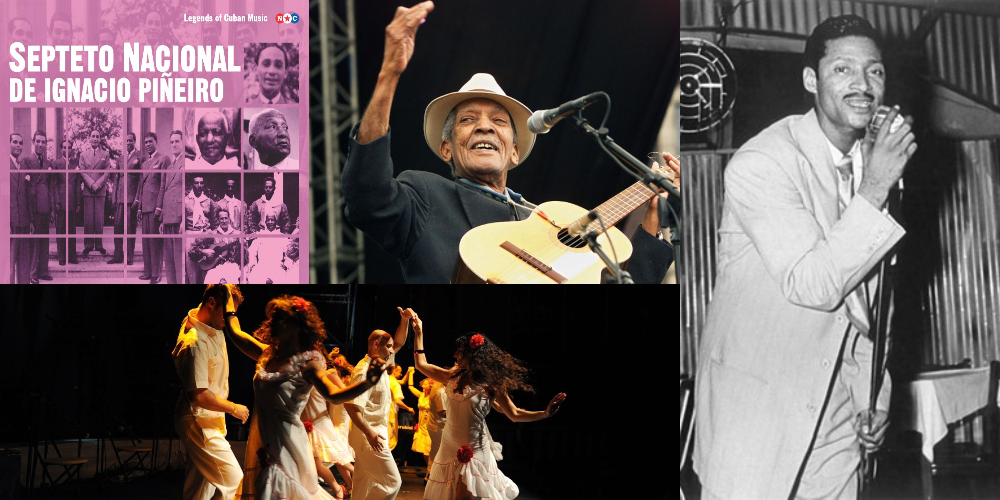
Tango
El tango es un fenómeno cultural nacido a finales del siglo XIX en los suburbios de Buenos Aires y Montevideo. Surgió como un lenguaje común entre los inmigrantes europeos y las comunidades locales, lo que lo convierte en un símbolo de la identidad híbrida del Río de la Plata. Desde una perspectiva técnica, su sonoridad está definida por el bandoneón —un instrumento de origen alemán que el tango adoptó como propio— y una rítmica de 4/4 marcada por el uso dramático del rubato (la libertad en el tempo), lo que le confiere su carácter emocional y nostálgico.
En términos de identidad y cultura, el tango pasó de ser un baile de las clases populares y marginales a convertirse en el emblema nacional de Argentina y Uruguay. Sus letras poseen una complejidad literaria única, abordando temas filosóficos como el paso del tiempo, el desengaño amoroso y la nostalgia por el hogar perdido. Esta profundidad lírica lo llevó a ser declarado Patrimonio Cultural Inmaterial de la Humanidad por la UNESCO en 2009, reconociéndolo como un pilar de la diversidad cultural global.
El legado y la evolución del género tuvieron un punto de inflexión con la figura de Astor Piazzolla, quien introdujo elementos del jazz y la música clásica contemporánea para crear el "Nuevo Tango". Esta vanguardia permitió que el tango saliera de los salones de baile para entrar en las salas de concierto más prestigiosas del mundo. A nivel comercial, bandas modernas como Gotan Project o Bajofondo han demostrado la vigencia del género al fusionarlo con la electrónica, manteniendo viva la esencia tanguera en las nuevas generaciones.
Dentro de los referentes y reconocimientos, la figura de Carlos Gardel permanece como el ícono máximo; su voz y carisma internacionalizaron el género en la era dorada del cine. En el ámbito de las distinciones, además de múltiples Latin Grammys otorgados a orquestas contemporáneas, el tango ha sido objeto de innumerables estudios académicos en sociología y musicología, consolidándose como una de las expresiones artísticas más analizadas y respetadas del siglo XX.
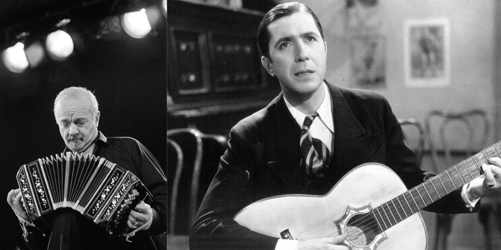
Mariachi
El mariachi es una manifestación cultural originaria del occidente de México, específicamente de la región de Jalisco. Su identidad técnica se define por un ensamble instrumental único que incluye violines, trompetas, guitarra, vihuela y guitarrón. Esta combinación permite una versatilidad sonora capaz de interpretar desde la alegría de los sones y jarabes hasta la profunda melancolía de la canción ranchera. Más que un grupo musical, el mariachi representa un sistema de valores, vestimenta (el traje de charro) y tradiciones orales que han sido transmitidas de generación en generación.
En el ámbito de la cultura e identidad, el mariachi ha trascendido su función festiva para convertirse en un elemento esencial de la vida social en México y las comunidades hispanas en el extranjero. En 2011, la UNESCO lo inscribió en la Lista Representativa del Patrimonio Cultural Inmaterial de la Humanidad, reconociendo su papel como vehículo de comunicación y su capacidad para fomentar el respeto por la diversidad cultural. Es el sonido que acompaña los hitos más importantes de la vida: desde celebraciones religiosas y civiles hasta el acompañamiento del duelo y el romance.
El legado y la proyección internacional del género se consolidaron durante la Época de Oro del cine mexicano, cuando figuras como Jorge Negrete y Pedro Infante proyectaron la imagen del "charro cantor" a nivel mundial. Este impulso permitió que el mariachi fuera adoptado en países tan diversos como Colombia, Japón y Estados Unidos, donde hoy existen programas académicos dedicados exclusivamente a su estudio. Su impacto comercial se refleja en la vigencia de agrupaciones emblemáticas como el Mariachi Vargas de Tecalitlán, considerado "el mejor mariachi del mundo" por su excelencia interpretativa y su rigor técnico.
Respecto a los referentes y distinciones, la figura de Vicente Fernández destaca como el máximo exponente de la canción ranchera con mariachi, acumulando múltiples premios Grammy y Latin Grammy. Otros artistas como Pepe Aguilar y Alejandro Fernández han mantenido la relevancia del género fusionándolo con estándares de producción contemporáneos. Los reconocimientos internacionales, sumados a la existencia de festivales globales de mariachi, confirman que este género es una de las expresiones artísticas más resilientes y respetadas de la herencia latina.
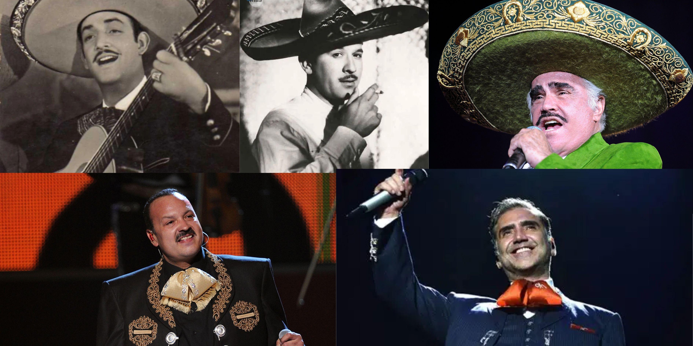
Cumbia
La cumbia es un fenómeno cultural de origen colombiano que representa una de las expresiones más puras del mestizaje americano. Su génesis se encuentra en la costa del Caribe, donde convergen la herencia rítmica africana (tambores), la tradición melódica indígena (gaitas y flautas) y la estructura lírica española. A diferencia de otros géneros, la cumbia posee una estructura rítmica de 2/4 que es intuitiva y universal, lo que facilitó su expansión y posterior arraigo en diversas regiones del continente bajo la premisa de la identidad popular.
En términos de identidad y diversidad cultural, la cumbia es el género más adaptado de América Latina. Ha dado lugar a variantes nacionales con una carga identitaria propia, como la cumbia argentina (villera y santafesina), la cumbia peruana (chicha), la cumbia sonidera en México y la cumbia chilena. Esta capacidad de "aclimatarse" a los contextos locales la ha convertido en un símbolo de las clases trabajadoras y en una herramienta de cohesión social, siendo hoy el sonido que unifica las celebraciones desde el Río Bravo hasta la Patagonia.
El legado y la masividad del género se consolidaron gracias a la orquestación de mediados del siglo XX, con agrupaciones que llevaron el ritmo del campo a los grandes salones de baile internacionales. Grupos como Los Ángeles Azules en México han logrado un hito histórico al llevar la cumbia a escenarios de festivales globales de vanguardia, demostrando que un género de raíz tradicional puede convivir con el pop y la electrónica sin perder su esencia. El legado de la cumbia es su carácter democrático: es música hecha por y para el pueblo.
Dentro de los referentes y galardones, es imprescindible citar a Lucho Bermúdez y Pacho Galán como los arquitectos de la cumbia moderna. En la actualidad, artistas como Carlos Vives han sido fundamentales para revitalizar el género, acumulando decenas de premios Grammy y Latin Grammy al fusionar la base de la cumbia con el pop. Los reconocimientos de la Academia de la Música y la inclusión de la cumbia en archivos históricos de naciones como Colombia y México subrayan su estatus como un patrimonio vivo que sigue evolucionando.
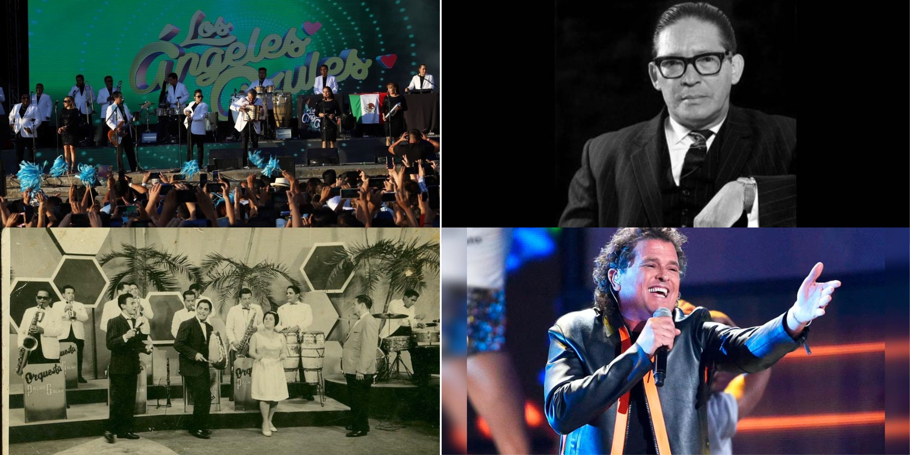
Samba y Bossa Nova
La samba es el pilar fundamental de la identidad cultural de Brasil. De raíces profundamente africanas, surgió en los barrios populares de Río de Janeiro como una expresión de resistencia y cohesión social. Su esencia técnica radica en la polirritmia de la percusión (el surdo, el pandeiro y el tamborim) y el uso del "estribillo" colectivo. Más que un género, la samba es el motor del Carnaval, funcionando como un cronista de la vida urbana, la política y la alegría del pueblo brasileño, lo que le valió ser declarada Patrimonio Cultural por el IPHAN.
Por otro lado, la bossa nova surgió a finales de los años 50 como una derivación sofisticada de la samba, influenciada por el jazz contemporáneo. Este género redefinió la identidad de Brasil ante el mundo, proyectando una imagen de modernidad y elegancia. Se caracteriza por la "batida" distintiva en la guitarra, una forma de cantar pausada y casi susurrada, y una complejidad armónica sin precedentes en la música popular. La bossa nova transformó el ritmo frenético de la calle en una experiencia introspectiva y urbana, centrada en temas como el amor y la naturaleza.
El legado y la proyección global de ambos géneros es incalculable. Mientras que la samba se mantiene como la máxima representación de la cultura de masas en Brasil, la bossa nova logró una de las internacionalizaciones más exitosas de la historia con el tema "Garota de Ipanema". Esta fusión permitió que la música brasileña influenciara a músicos de todo el planeta, estableciendo estándares de composición que hoy se enseñan en los conservatorios de música más prestigiosos del mundo.
Entre los referentes y distinciones, destacan figuras como Joao Gilberto y Antônio Carlos Jobim, arquitectos de la bossa nova, y Cartola o Beth Carvalho como baluartes de la samba. Artistas como Caetano Veloso y Gilberto Gil han sido galardonados con múltiples premios Grammy y el Polar Music Prize, consolidando la hegemonía brasileña en la industria. El reconocimiento de la Academia y de instituciones globales confirma que estos ritmos son la mayor exportación cultural de Brasil, definiendo el concepto de "saudade" para el resto del mundo.
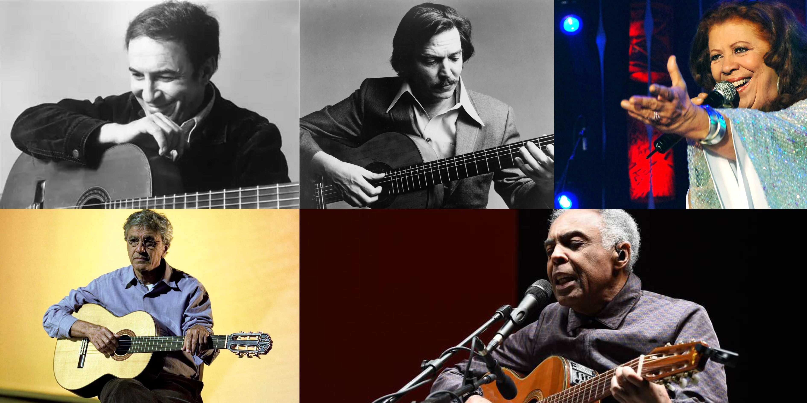
4. Identidad Nacional
Vallenato
El vallenato es un género musical que representa la identidad del Caribe colombiano y que fue declarado Patrimonio Cultural Inmaterial de la Humanidad por la UNESCO en 2015. Su estructura técnica es un ejemplo excepcional de sincretismo cultural: el acordeón diatónico de origen europeo, la guacharaca de tradición indígena y la caja (tambor) de herencia africana. Esta tríada instrumental da vida a los cuatro aires o ritmos fundamentales del género: el paseo, el merengue, la puya y el son, cada uno con una métrica y una intención narrativa específica.
En cuanto a su función en la identidad nacional, el vallenato se distingue por su carácter literario y descriptivo. Tradicionalmente, el compositor vallenato actuaba como un juglar que comunicaba los eventos del pueblo a través de la música. Con el paso del tiempo, esta expresión rural se convirtió en un pilar de la identidad de Colombia ante el mundo, especialmente tras la internacionalización de la figura del "vallenato comercial" y la creación del Festival de la Leyenda Vallenata, que institucionalizó el género como una disciplina de alto rigor interpretativo.
El legado y la evolución del género han permitido su supervivencia en la industria moderna. El movimiento conocido como "Vallenato Nueva Ola" y las fusiones pop han llevado el sonido del acordeón a los mercados globales. Figuras como Carlos Vives fueron pioneras en modernizar el vallenato sin perder su esencia narrativa, logrando que el género compitiera en las listas de éxitos internacionales y ganara espacios en escenarios tradicionalmente ajenos a la música folclórica.
Dentro de los referentes y distinciones, la historia del género se construye sobre nombres como Rafael Escalona, cuyas composiciones son fundamentales para la lírica colombiana, y Diomedes Díaz, el artista con mayores ventas en la historia del género. En la era contemporánea, el vallenato ha sido ampliamente reconocido por la Academia Latina de la Grabación, contando con su propia categoría en los Latin Grammys. Estos galardones, sumados a la protección de la UNESCO, ratifican al vallenato no solo como un producto comercial exitoso, sino como un baluarte de la memoria colectiva latinoamericana.
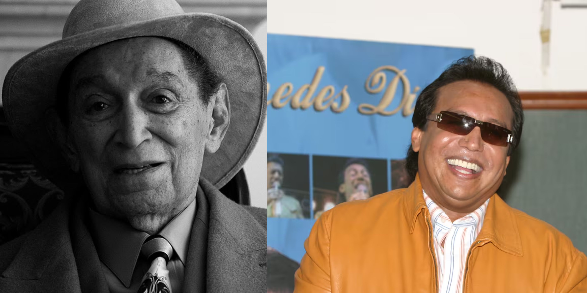
Bachata
La bachata es un género musical y bailable originario de la República Dominicana, cuyas raíces se encuentran en el bolero rítmico, el son y el pasillo. Surgida a mediados del siglo XX en contextos rurales y urbanos marginales, fue inicialmente denominada "música de amargue" debido a sus temáticas de desamor y melancolía. Su identidad sonora se define por la preeminencia de las cuerdas, específicamente la guitarra (requinto) que ejecuta arpegios distintivos, acompañada por la güira y el bongó, creando un ritmo sincopado que es hoy una de las señas de identidad más reconocibles del Caribe.
En el marco de la identidad nacional, la bachata ha experimentado una de las transformaciones sociológicas más drásticas de la música latina. Durante décadas fue censurada y asociada con las clases sociales bajas; sin embargo, tras un proceso de refinamiento en la producción y la lírica, logró permear todos los estratos sociales de la isla. En 2019, fue declarada Patrimonio Cultural Inmaterial de la Humanidad por la UNESCO, consolidando su estatus como un símbolo de orgullo nacional y una herramienta de cohesión para la diáspora dominicana en todo el mundo.
El legado y la proyección global del género alcanzaron una nueva dimensión en la década de los 90 con la figura de Juan Luis Guerra, quien aportó una poética sofisticada y arreglos musicales de alto nivel académico. Posteriormente, la evolución hacia la "bachata moderna" o urbana, liderada por agrupaciones como Aventura, permitió que el género conquistara mercados anglosajones y europeos. Este fenómeno no solo generó cifras de ventas sin precedentes, sino que redefinió el concepto de música tropical para las nuevas generaciones.
Dentro de los referentes y reconocimientos, figuras como Anthony Santos y Luis Segura son fundamentales para entender la base tradicional del género. Por su parte, Romeo Santos ha sido clave para la institucionalización comercial de la bachata, logrando récords de ventas y llenos totales en estadios internacionales. Los múltiples premios Grammy, Latin Grammy y Billboard otorgados a estos artistas ratifican que la bachata ha dejado de ser un ritmo local para convertirse en una de las industrias culturales más influyentes y respetadas del continente.
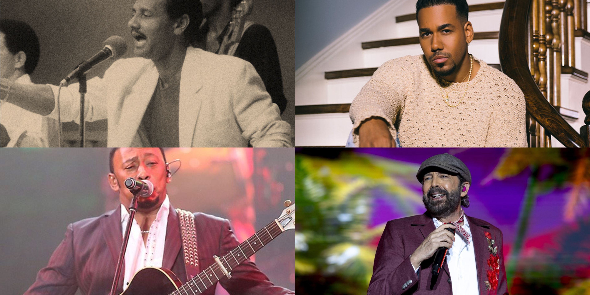
Nueva Canción
La Nueva Canción Latinoamericana fue un movimiento artístico y social que emergió con fuerza durante las décadas de 1960 y 1970. Su identidad se fundamenta en la recuperación de los instrumentos folclóricos —como el charango, la quena y el bombo legüero— y su fusión con líricas de alto contenido social, político y poético. A diferencia de la música comercial, este movimiento buscó una "autenticidad" sonora que rechazara los modelos estéticos impuestos por las industrias extranjeras, posicionándose como la banda sonora de los procesos de cambio en el continente.
En términos de identidad nacional y regional, este género funcionó como un eje de unidad panamericana. Aunque tuvo epicentros muy claros como Chile (Nueva Canción Chilena), Argentina (Nuevo Cancionero) y Cuba (Nueva Trova), todos compartían un lenguaje común: el uso de la palabra como herramienta de conciencia. El movimiento permitió que la identidad latina se definiera a través de la solidaridad y la denuncia de las injusticias, consolidando una "patria grande" musical que unificó a estudiantes, obreros e intelectuales de toda Iberoamérica.
El legado de la Nueva Canción es inconmensurable, pues sentó las bases para lo que hoy entendemos como "música de autor". Su influencia permea el rock en español y la música alternativa contemporánea, rescatando ritmos olvidados y elevándolos a una categoría artística superior. A pesar de que muchos de sus exponentes sufrieron censura y exilio, su música se convirtió en un símbolo de resistencia cultural que continúa vigente en las manifestaciones sociales actuales y en la memoria histórica de las naciones latinoamericanas.
Dentro de los referentes y reconocimientos, figuras como Violeta Parra y Víctor Jara en Chile, Mercedes Sosa en Argentina, y Silvio Rodríguez en Cuba, son pilares fundamentales. Aunque el movimiento no nació con un fin comercial, el impacto fue tal que Mercedes Sosa (la "Voz de América") recibió múltiples premios Grammy y reconocimientos de la UNESCO. El legado de estos artistas ha sido preservado por instituciones culturales globales, ratificando que la Nueva Canción es el testimonio lírico más profundo del siglo XX en América Latina.
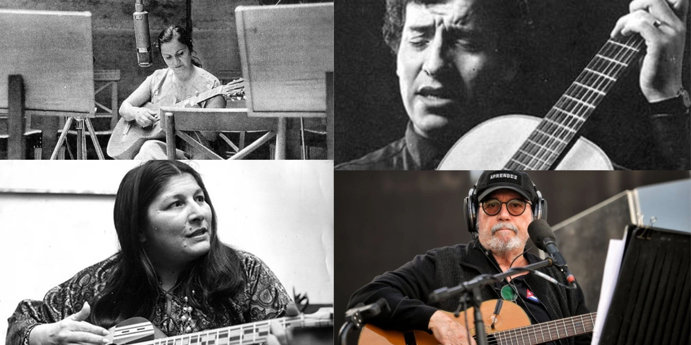
Cuarteto
El cuarteto es un género musical popular nacido en la década de 1940 en la provincia de Córdoba, Argentina. Su identidad técnica surge de una hibridación única: la mezcla del pasodoble y la tarantela (herencia de inmigrantes españoles e italianos) con ritmos locales. Originalmente se ejecutaba con un ensamble de cuatro instrumentos (piano, acordeón, violín y contrabajo), de donde deriva su nombre. Su característica rítmica principal es el "tunga-tunga", una acentuación en el primer tiempo que lo convierte en un ritmo esencialmente bailable y enérgico.
En el marco de la identidad nacional, el cuarteto representa la voz de la clase trabajadora y la periferia. Durante décadas, fue un género marginalizado por las élites culturales, lo que fortaleció el sentido de pertenencia de los "cuarteteros". En 2013, fue declarado Patrimonio Cultural Inmaterial de la ciudad de Córdoba y, posteriormente, de la provincia, reconociéndolo no solo como música, sino como un motor social que genera empleo, identidad y un lenguaje propio (el uso de modismos locales en las letras).
El legado y la evolución del género permitieron que el cuarteto dejara de ser un fenómeno estrictamente cordobés para conquistar el resto de Argentina y países limítrofes. En los años 90, el género vivió una modernización técnica, incorporando instrumentos de viento y percusiones caribeñas, lo que le dio una sonoridad más cercana al merengue pero manteniendo su esencia rítmica original. Este legado se mantiene vivo en los "bailes", eventos masivos que funcionan como centros de reunión social y comunitaria.
Dentro de los referentes y distinciones, la figura de Carlos "La Mona" Jiménez es indiscutible; con más de 90 álbumes grabados, es el máximo ícono viviente y el responsable de la masificación del género. Asimismo, el legado de Rodrigo Bueno ("El Potro") fue fundamental para la federalización del cuarteto, logrando récords de ventas y llenando el estadio Luna Park de manera consecutiva. Los premios Gardel y otros reconocimientos nacionales han validado al cuarteto como una de las industrias culturales más potentes de Argentina, capaz de movilizar a millones de personas.
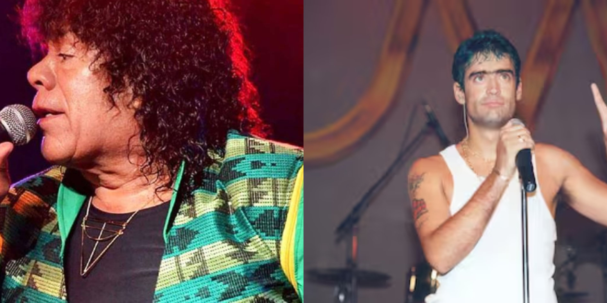